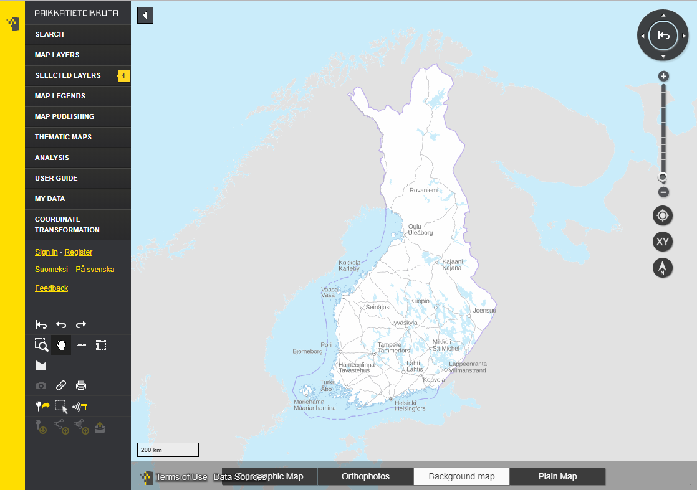

Year in review 8/2019
Sami Mäkinen - NLS Finland
### Oskari
- Library/framework/geoportal/tool
- Server: Java built with Maven
- Frontend: JS built with Webpack
- Requires:
- PostgreSQL/PostGIS
- Redis
- (Spatial Data Infrastructure)
National geoportal Finland

### Repository arrangements
- oskari-server
- (oskari-server-extension-template)
- sample-server-extension
- oskari-frontend
- oskari-frontend-contrib
- sample-application
Frontend builds

#### Frontend builds
- Babel
- ES6 modules
- imports
- dynamic imports
- npm dependencies
- React support
#### Imports: bundles
Then/now:
```json
"scripts": [{
"type": "text/javascript",
"src": ".../mapping/drawtools/instance.js"
}, {
"type": "text/css",
"src": ".../mapping/drawtools/resources/css/style.css"
}, { ... }]
```
Now/future:
```Javascript
import { DrawTools } from './instance';
import './resources/css/style.css';
```
#### Imports: applications
Then (minifierAppSetup.json):
```json
{
"bundlename" : "drawtools",
"metadata" : {
"Import-Bundle" : {
"drawtools" : {
"bundlePath" : ".../mapping/ol/"
}
}
}
}
```
Now (main.js):
```Javascript
import 'oskari-loader!oskari-frontend/.../drawtools/bundle.js';
```
### New goodies: React
- Small and simple
- Named imports
- Use props as much as possible
- State kept at bundle instance
- "Mutator" objects from services
### First steps in React
- Language selector
- Thematic maps (legend)
- Map layer listing / admin
### New goodies for UI
- Ant Design
- "The world's second most popular React UI framework"
- Styled-components
- Challenge: multiple styling libs / style conficts
### New goodies
- Storybook
- Jest
### Pull requests
- Travis CI
- ESLint
- Jest
- Junit
- Oracle JDK 11, OpenJDK 8 & 11
### WFS integrations
- Complete rewrite
- MVT / GeoJSON
- WFS 3 supports
- Complex features
### Vector features
- https://oskari.org/documentation/examples/oskari-style
- Mapbox styles for MVT
- Clustering
- Color animations
- Hover
- Performance improvements
#### Thematic maps
- Time series & diagram
- UN stats Sustainable Development Goals
- Improvements:
- Manual classification
- Filter out invalid data
- Localization options added
- Region sets order/res files
- Thematic Mapping with Oskari at 15.00 (Opera)
### Server stuff
- Jetty/CometD upgrade (1.49 / 1.50)
- CSRF protection
- Enabled async controllers
- Frontend paths removed from AppSetups
- Appsetup specific publish template
### Printout
- Complete rewrite
- True vector features
- Logo on PDF customizable
### Search
- Removed NLS search channels
- Validation & error handling improved
- OSM channel supports bbox filter to limit results
### Documentation / DX
- API doc improvements / SchemaSpy: oskari.org/db
- Toolbar button logic rewrite
- Migrations error handling
- Setup app improved
- Inital support for in-memory test database setup
- Library updates
- fi.nls.oskari.* -> org.oskari.* packages
- Classpath conflicts with libraries fixed
#### Other
- Bing maps
- 3D
- French & Russian localizations
- User location (path, accuracy, error handling, map extent)
#### Other improvements
- End-user registration
- Layer proxy
- KML & CSW parsing
- drawtools
- Session timeout notification
- Performance
- More things saved in state like map rotation
### Other stuff
- Support vector tile based layers
- Internal layers
- Login redirects to referer instead of geoportal "root"
- Skip intro & map rotation params on urls
- Fixes to analysis functionality
# Thank you!
- https://oskari.org
- https://github.com/oskariorg
- Oskari-user@lists.osgeo.org
- https://gitter.im/oskariorg/chat